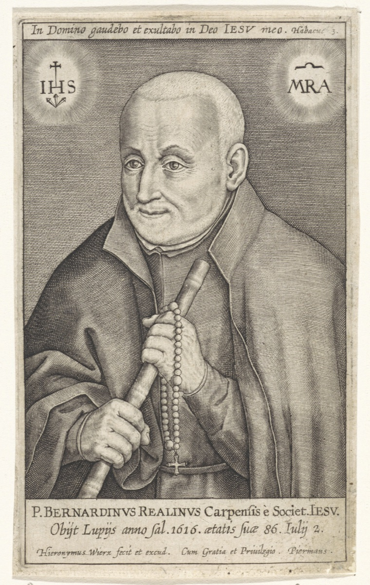

Misionari, pastiri i mistici (Pojedinačna proglašenja)
Svećenik · Duhovnik
Sv. Bernardin Realino
1530. – 1616.
Pravnik i gradski upravitelj postao je isusovac te u Lecceu proveo više od četrdeset godina. Susretali su ga u ispovjedaonici, uz bolesnike i među siromašnima, zbog čega su ga zvali ocem grada.

Izvor slike
- Spomendan
- 2. srpnja
- Zaštitništvo
- Lecce
- Životni vijek
- 1530. – 1616.
- Djelovanje
- Duhovno vodstvo i razlučivanje · Siromašni i isključeni · Bolesnici i umirući
- Razdoblje
- 16., 17. stoljeće
- Slavi se
- 2. srpnja
Životopis
Bernardin Realino došao je u Lecce 1574. kao isusovački svećenik sa zadatkom da ispita mogućnost otvaranja redovničke kuće i kolegija. U gradu je ostao do smrti, punih četrdeset i dvije godine. Stanovnici su ga susretali u ispovjedaonici, na propovijedi, uz bolesnički krevet i među siromašnima. Zato su ga nazvali svojim ocem.
Rodio se 1. prosinca 1530. u Carpiju, u sjevernoj Italiji. Obitelj mu je pripadala svijetu dvorova i upravnih službi. U mladosti je studirao književnost, filozofiju i medicinu, a zatim se usmjerio na građansko i crkveno pravo. Pravničko mu je obrazovanje otvorilo put prema javnim poslovima. U dvadesetim je godinama postao gradskim upraviteljem Felizzana, a ta je služba uključivala i sudačku odgovornost. Stanovnici su, zadovoljni njegovim poštenjem, tražili da ostane na dužnosti i nakon prvoga mandata. Poslije je radio na prikupljanju poreza u Alessandriji i upravljao Cassineom. Sposobnost, poštenje i obiteljske veze donosili su mu nova imenovanja. U Castelleoneu je također obnašao upravnu službu, a potom radio za markiza od Pescare.
Takav je put obećavao društveni uspon. Bernardin je, međutim, već kao službenik počeo pomagati siromasima vlastitim novcem. Kad ga je markiz 1564. poslao u Napuljsko Kraljevstvo, ušao je u grad u kojem se Družba Isusova tek bila učvršćivala. Susreo je dvojicu mladih isusovaca, a propovijed jednoga svećenika potaknula ga je da potraži ispovijed. Nakon duhovnih vježbi odlučio je stupiti u Družbu. Isusovačka predaja taj trenutak povezuje i s Marijinim viđenjem. Dotadašnju je karijeru napustio i 13. listopada 1564. ušao u novicijat.
U pismu ocu Bernardin je isusovački život opisao kroz jednostavno odijevanje, pouzdan nauk i duhovno bogatstvo ljubavi prema Bogu i bližnjemu. Takav izbor nije bio povlačenje iz zahtjevnih poslova. U listopadu 1566. položio je redovničke zavjete. Isprva je želio biti redovnički brat, no poglavari su ga uputili prema svećeništvu te je zaređen 24. svibnja 1567. Isusovački poglavar Franjo Borgia ubrzo mu je povjerio odgoj novaka u Napulju, premda je Bernardin još studirao teologiju. U istome je gradu propovijedao i poučavao katekizam. Nije ostao samo među učenima i uglednima: obilazio je i ljude prisiljene na rad na galijama u napuljskoj luci. Pravnik koji je nekoć dijelio službene odluke sada je slušao tuđe savjesti i nosio Evanđelje onima kojima je sloboda bila oduzeta.
Godine 1574. poslan je u Lecce, u Apuliji, da ispita može li se ondje osnovati isusovačka kuća i kolegij. Građani su pridošlim isusovcima ponudili kuću i počeli graditi crkvu. Kolegij je otvoren u rujnu 1583., a Bernardin je u njemu u različitim razdobljima poučavao te služio kao rektor i zamjenik rektora. Propovijedao je i u isusovačkoj crkvi i u katedrali, ispovijedao, savjetovao svećenike, obilazio bolesnike i zatvorenike te držao duhovne nagovore u samostanima. U takvu se ritmu postupno stjecalo povjerenje ljudi različitih staleža. Za razliku od ranijih službi, u kojima su se odgovornosti mijenjale s imenovanjima, sada je dobro poznavao grad i ljude kojima je služio.
Lecce je u Bernardinu dobio svećenika koji je znao koliko je važno odgojiti druge za služenje. Godine 1583. okupio je zajednicu dijecezanskih svećenika radi jačanja njihova duhovnog života i poznavanja moralne teologije. Cilj je bio vrlo praktičan: da bolje služe ljudima koji dolaze na ispovijed. Time se njegov rad nije zaustavio na osobnim susretima. Svećenici koje je pratio mogli su brižnije pristupati onima koje on sam nikada neće susresti.
U isusovačkom životu poslušnost je uključivala spremnost na premještaj. Bernardin je više puta trebao otići iz Leccea u Napulj ili Rim. Predaja bilježi da bi ga svaki put zaustavila bolest ili druge okolnosti, pa su poglavari na koncu odustali od premještaja. Lecce je za njega postao dugotrajna služba, s ponavljanjima i teškoćama koje nosi vjernost jednomu gradu.
Papa Pio XII., govoreći nakon Bernardinove kanonizacije, usporedio ga je s isusovcem Ivanom de Brittom, misionarom i mučenikom u Indiji. Bernardin je također želio daleke misije, ali mu je, prema Papinim riječima, vlastita Indija bio Lecce. Ondje je u skrovitosti ispovjedaonice i duhovnog razgovora služio do starosti.
Bernardinu su se za savjet obraćali biskupi, plemići i obični stanovnici. U marijanskim su se kongregacijama, koje Pio XII. spominje u govoru o njegovu životu, okupljali svećenici, plemići, radnici i mladi. Preko njih je vjerski život dopirao do obitelji i različitih gradskih četvrti. Dugo je služenje tako povezalo osobne razgovore s brigom za cijeli grad, kojemu je ostao poznat kao apostol Leccea.
U lipnju 1616. teško se razbolio. Vijest se proširila gradom i ljudi su se okupljali pred isusovačkim kolegijem. Primio je bolesničko pomazanje i pričest kao popudbinu. Gradski su magistrati dvaput došli izraziti želju da ga imaju za zaštitnika. Prvi su put njegov uzdah, a drugi put pokret glave protumačili kao pristanak; riječi više nije mogao jasno izgovoriti. Umro je 2. srpnja 1616. u gradu kojemu je posvetio najveći dio redovničkoga života. Njegov grob postao je mjesto molitve, a spomen na njega ostao je povezan s Lecceom i njegovom isusovačkom crkvom.
Papa Lav XIII. proglasio ga je blaženim 12. siječnja 1896., a Pio XII. svetim 22. lipnja 1947. Spomendan mu je 2. srpnja. U homiliji na kanonizaciji Pio XII. istaknuo je vrijednost apostolata među vlastitim ljudima. Bernardinovo je štovanje ostalo živo u Lecceu, gradu koji je u njemu prepoznao zagovornika, i u Carpiju, mjestu njegova rođenja. Njegovi se posmrtni ostatci čuvaju u isusovačkoj crkvi u Lecceu, gdje njegovo ime i dalje pripada životu grada.
Bernardin Realino pokazuje kako se darovi stečeni u jednom zvanju mogu predati drugomu. Pravničko rasuđivanje, iskustvo javne odgovornosti i poznavanje ljudi nisu nestali kad je odložio svjetovnu karijeru. U svećeništvu su dobili drukčiju svrhu: strpljivo slušanje, razborit savjet i brigu za one koje društvo lako previdi. Njegova svetost rasla je kroz ponavljane susrete, u gradu u kojem je bio poznat po imenu, ali je svakoga čovjeka trebao susresti iznova.
Pročitaj više na izvornoj stranici ↗